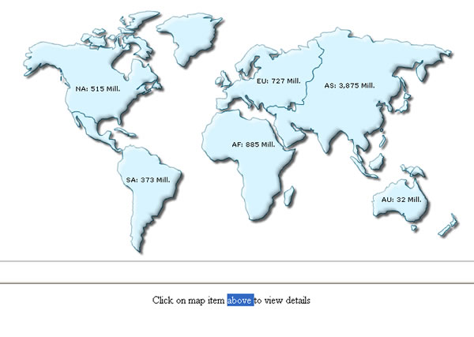

Linking to Frames |
FusionMaps allows you to open links in specified frames too. To do so, you just specify the name of the frame in the link itself. This feature can be very useful when creating simulated drill down reports and dashboards. To open link in a specified frame, you need to set the link as under: <entity ... value='2235' link='F-FrameName-ShowDetails.asp%3FMonth%3DJan' ... > The first character in the link is F, denoting that we need to open this link in a frame. Post F, we add a dash character (-) and then specify the name of frame in which we want the link to open. Soon after the frame name, we add another dash character and finally write the actual link which is to be opened. Again, the link needs to be URL Encoded. XML Example: |
| <map borderColor='005879' fillColor='D7F4FF' numberSuffix=' Mill.' includeValueInLabels='1' labelSepChar=': ' baseFontSize='9'> <data> <entity id='NA' value='515' link='F-detailsFrame-../DemoLinkPages/DemoLink1.html'/> <entity id='SA' value='373' link='F-detailsFrame-../DemoLinkPages/DemoLink2.html'/> <entity id='AS' value='3875' link='F-detailsFrame-../DemoLinkPages/DemoLink3.html'/> <entity id='EU' value='727' link='F-detailsFrame-../DemoLinkPages/DemoLink4.html'/> <entity id='AF' value='885' link='F-detailsFrame-../DemoLinkPages/DemoLink5.html'/> <entity id='AU' value='32' link='F-detailsFrame-../DemoLinkPages/DemoLink6.html'/> </data> </map> |
In this example, the main frameset is contained in FrameExample.html, which has two vertical frame pane- one on top containing the map (FramePages\FrameMap.html) and one on bottom to show the linked frame pages. The bottom pane by default shows FramePages\LowerFrame.html which contains the message "Click on map item above above to view details ". The setup looks as under: |
|  |
The HTML code of FrameExample.html is as under: |
| <html> <head> <title> FusionMaps Frame Drill-down example </title> </head> <frameset rows="450,*" cols="*" frameborder="YES" border="1" framespacing="0"> <frame src="FramePages/FrameMap.html" name="mapFrame" scrolling="NO" noresize > <frame src="FramePages/LowerFrame.html" name="detailsFrame" scrolling="Auto" noresize> </frameset> </html> |
The top frame (FramePages\FrameMap.html) contains the map and is named as mapFrame. The bottom frame responds to click events from the map - it's named as detailsFrame, and we use this name in our XML data links. When the user now clicks on the map links, they open up in detailsFrame frame pane, which is what we exactly wanted to. |